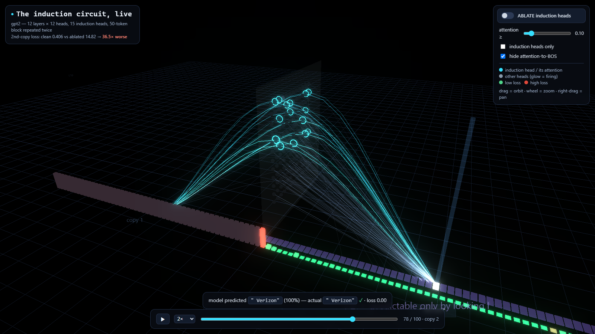
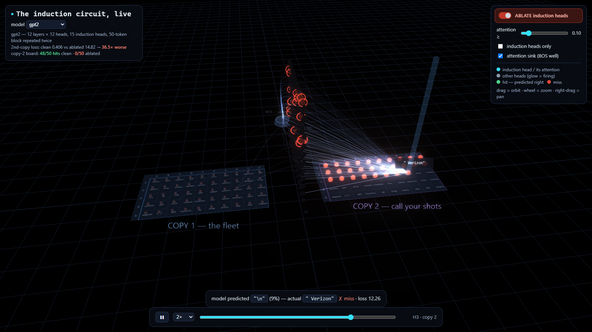

Take a language model apart.
One experiment at a time.
The slow, visual version of the repo — no walls of text; every idea is something you poke, drag, or toggle. Move with the tabs on the left, the Prev / Next buttons, or the ← → keys. Each tab is one experiment and stands on its own.
Tabs are ordered for learning, not by folder number — so related experiments sit together (the repo № on each tab still points back to its folder).
The induction circuit: find it, break it
The foundational experiment. Force the model to copy, watch where it succeeds, then delete the heads that do the copying and watch the ability vanish — a causal proof, in three moves.
① The setup — a trick that forces the model to copy
Feed the model a list of random tokens, then the exact same list again. The second time, the only way to predict what's next is to look back and copy.
② The cliff — and switching it off
Plot how surprised the model is at every position. Watch it fall off a cliff when copy 2 begins — then hit ablate and watch the cliff refill.
③ What an induction head actually does
An attention head lets each token "look back." An induction head has one habit: find where this token appeared before, then look at whatever came right after it.
go deeper — why random tokens, and what's the "induction score"?
Random tokens carry no grammar or facts to lean on — the only signal is the repetition. So nailing copy 2 must be in-context learning, not memorized trivia. Ablate = a forward hook on blocks.{L}.attn.hook_z zeroes just those heads' output; if the cliff refills, they caused the behaviour (on gpt2 the jump is 36×). The induction score is each head's average attention on the look-back-and-shift diagonal — plot it per (layer, head) and the dots are the induction heads (gpt2 has a couple; Qwen3.5-4B stacks 34).
"But maybe any heads matter?"
Fair challenge. So ablate the same number of randomly chosen heads instead, 10 times. If random ablations barely hurt while the induction heads devastate — the damage is specific to the circuit, not to losing some heads.
go deeper — what's a "σ" (sigma)?
σ (standard deviation) measures the spread of the 10 random trials. Saying induction ablation is "102σ above the random mean" (Pythia-1.4B) means: on the bell curve of random damage, the induction result is absurdly, off-the-chart worse — astronomically unlikely to be a coincidence. That's how you turn "it looks important" into a number.
The circuit has two halves
The induction head can only copy "what came after last time" if some earlier head already tagged each token with who came before it. That upstream helper is the previous-token head. Cut it, and the induction head goes blind — without touching the induction head at all.
Next tab (Layer knockout) chases the same upstream signal into the hybrid models, where the previous-token head hides in a surprising place.
Follow the signal upstream
Some layers can't be scored for induction (the hybrid models' linear-attention layers show no attention pattern) — but they can still be knocked out. Remove one attention layer at a time, re-measure the induction heads, and read off which layers they secretly depend on.
go deeper — the "just-in-time shift register"
In the hybrid Qwen3.5 models there were no previous-token heads in the normal attention layers (tab 3 couldn't find them). This lesion study shows why: the upstream signal lives in the linear-attention layers, and specifically the one directly before each induction layer — L14 feeds L15, L10 feeds L11 — acting as a local shift register that delivers "the previous token" exactly when it's needed. gpt2 validates the method: layer 0 is foundational (everything builds on it), and its previous-token signal is spread thinly across several mild layers. (Non-critical layers shown near baseline; the deep dips are the measured ones.)
The Hydra: cut a head, a backup wakes up
Ablate the main induction heads and re-score every remaining head inside the broken model. In some models, heads that looked useless suddenly step up to do the job — backups that were invisible until needed. Cut one head, two grow back.
Is this self-repair real, or an artifact of how we ablate? The next two tabs answer that — first mean-ablation, then faithful patching.
Zeros, or the average?
"Delete a head's output" hides a choice: what do you replace it with? Zeros are simplest but off-distribution — the model never saw an all-zero activation in training, so it may overreact. Replacing with the head's average keeps a realistic size while still deleting the information.
go deeper — why this matters
If zeroing and mean-ablation disagree, some of the "damage" (or self-repair) is really a distribution shock, not the model's true behaviour. On Qwen3-1.7B they agree (2.9× ≈ 3.0×), so its tiny damage is genuine redundancy — the Hydra from tab 5 is real, not a LayerNorm artifact. On gpt2/Pythia, zeroing overstates the damage ~1.5×; every conclusion survives the calibration, but it's worth knowing which number is honest.
The gold-standard null: patching
The most faithful ablation replaces a head's output with a real activation from a matched control run — same first copy, but a fresh, non-repeating second half. Same-sized, in-distribution, zero shock. It surgically nulls only the induction region.
Because attention is causal and the first halves match, patching is a no-op on copy 1 and only changes the copy-2 (induction) predictions.
go deeper — the verdict on the Hydra
The payoff: on Qwen3-1.7B, faithful patching recruits the same backups as zero-ablation (L21H9, L18H4, L8H5), so the self-repair is a genuine property of the network, not a zeroing artifact. But the damage-magnitude ordering (zero vs mean vs patch) turns out to be model-dependent — there is no universal ranking. The robust cross-model claim isn't "which is biggest," it's that patch and zero agree on which backups exist.
Watch the circuit be born
Circuits aren't there at the start — they snap into existence during training. Drag through 14 real Pythia-160m checkpoints and watch the induction score sit near zero… then ignite between steps 512 and 1000.
go deeper — the built-in control
See the flat grey line? That's copy-1 surprise — the un-copyable half. It stays pinned at ~13 the entire run. If the drop were just "the model getting generally better," copy-1 would fall too. It doesn't. Only the copyable half improves, and only after the circuit ignites — the control that makes the story airtight.
Grow one yourself — the data decides
This experiment trains a tiny model from scratch, three times, changing only the data mix. Story-only data never grows the circuit. Add the right pressure and it ignites in a single 8-million-token window. The recipe matters, not just the size.
go deeper — why doesn't TinyStories alone work?
Interesting split: the upstream half (prev-token heads) forms for free on almost any text — it reached 0.57 even on stories alone. But composition — wiring that upstream signal into a copying circuit — only happens when the data rewards copying. The synthetic repeated-block rows are that reward: the only way to predict them is to copy. 85% real text + 15% synthetic ignited; 30% wikitext with no synthetic stalled at 0.065 after 445M tokens. The circuit needs a reason to exist.
Same tools, new question: refusal
A chat model's decision to refuse turns out to live along a single direction in its activations. Slide it: remove the direction and a harmful prompt gets answered; add it and a harmless prompt gets refused. A clean double-dissociation.
go deeper — how do you "find a direction"?
Run a batch of harmful prompts and a batch of harmless ones. Average each group's residual-stream activation at the last token, and subtract. That difference vector is the refusal direction (best layer by separation — here layer 21 of Qwen2.5-1.5B). "Remove it" = project it out of every layer; "add it" = add it in. Directions are the feature-level cousin of heads — exactly where mech-interp heads next (sparse autoencoders find thousands of them). This same direction is the tool used in the next two tabs.
Did "unlearning" erase it? — the generation test
Companies "unlearn" facts for safety. First test: does the model still generate the forgotten answer? Measured by ROUGE-L overlap with the truth on five TOFU-unlearned checkpoints, against a floor (never learned it) and a ceiling (learned it normally).
Generation only sees the model's top choice. The next tab asks a sharper question — the probability it assigns the true answer — and the story changes.
The same question, asked by probability
"Does the model know X" is really about the probability it puts on the true answer — not just its greedy guess. Rerun with that metric and the murky result turns sharp: one method was only hiding the knowledge, and one intervention brings it back.
go deeper — why this matters for alignment
"We unlearned it" is a safety claim, and this shows a safety claim can be an artifact of the metric. NPO looks fully forgotten under generation (tab 11), but its answer probability is only suppressed — ablating the refusal direction lifts it 4× back above the floor. GradDiff genuinely forgot; RMU barely forgot on Q&A at all. Same word — "unlearned" — three different realities. Building tools and evals that catch this is a real contribution to safe, trustworthy AI.
Everything above, as a 3D replay
The same runs, staged as a game of Battleship: copy 1 is the fleet, copy 2 is the targeting board, and a wall of attention heads sits between them. Attention is drawn as light; every prediction drops a peg — green hit, red miss.


Four scenes — the induction circuit, the refusal direction (tab 10), the training-time birth (tab 8), and the unlearning gauge (tabs 11–12) — all on the same stage.
It's all one move, repeated
Every experiment here is one move repeated: find a behaviour → break it on purpose → prove the break was causal → control for the boring explanations. The repo runs that loop on copying, on composition, on training-time birth, and on two safety behaviours.
🧭 Where this goes next
These experiments work at the level of components — heads and layers. The modern frontier is features: learned concepts as directions in activation space, found by sparse autoencoders. The refusal direction (tab 10) was a hand-made preview of one.
A natural next experiment: train an SAE on the tiny model from tab 9, then build a viewer to watch features light up on real text — the same move as induction heads, one level up.